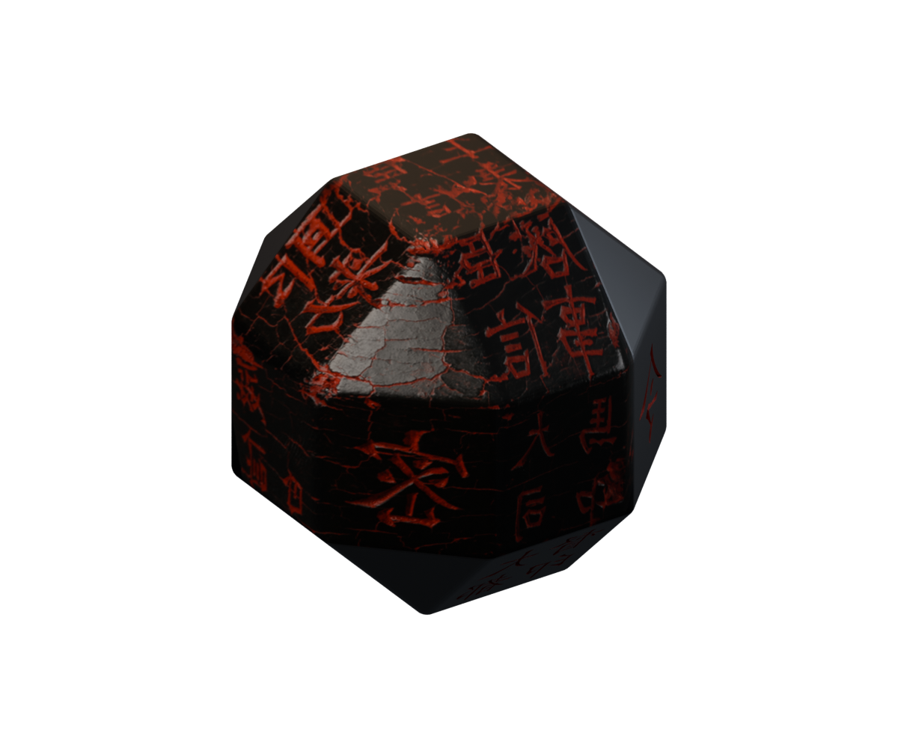
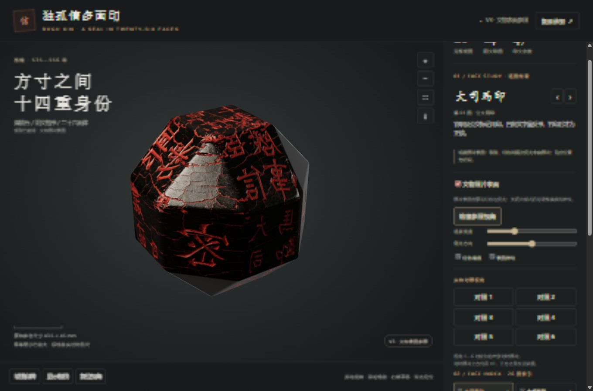
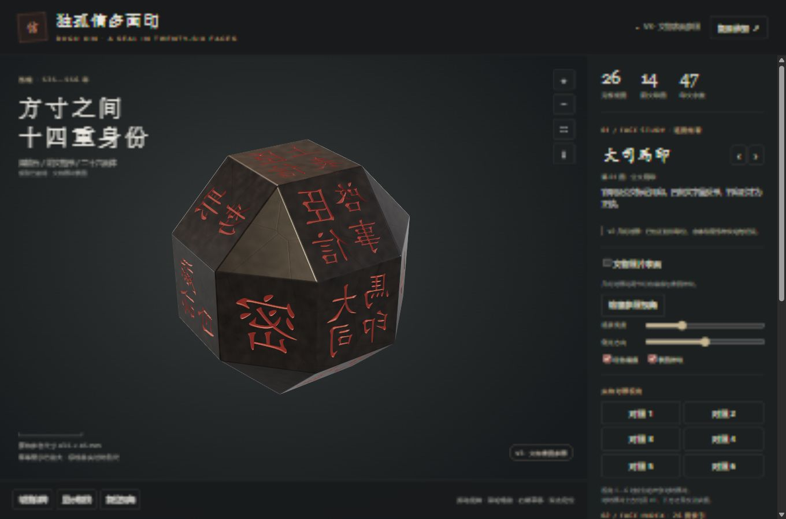

独孤信多面印
Dugu Xin Multi-faceted Seal 3D
V3 文物表面参照版。浏览器里旋转这枚二十六面体；模型、两种表面和参考照片都在一个离线 HTML 里。
An offline single-file viewer for a 26-faced seal model. Drag to turn it.

26棱面 · faces
14阴文印面 · inscribed
47印文字 · characters
7馆藏照片贴面 · photo faces


这是可旋转的照片参照模型，不是全周摄影测量或高精度扫描。字形、凹刻深度和未见表面的磨损都是近似。查看器自述年代为西魏（535–556），材质写作煤精石；这些说法来自项目界面及其列出的公开资料，本页不另作考证。
This is a rotatable photo-reference model, not a measured scan. The viewer dates the seal to the Western Wei (535–556) and calls the material 煤精; those lines come from the project itself and the sources it cites.